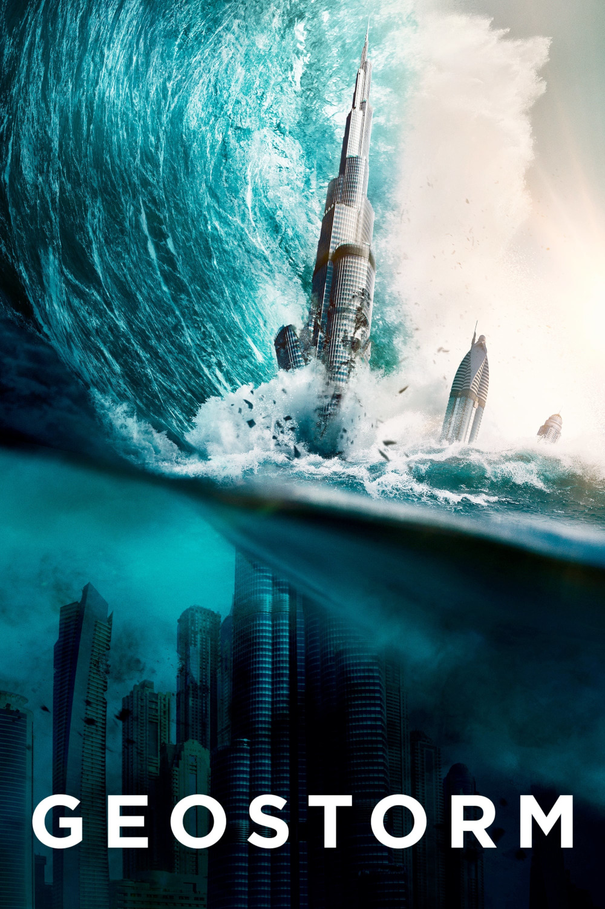

Мировая премьера: 20 октября 2017
Слоган: Есть вещи, которые невозможно контролировать.
Сюжет: На нашу планету обрушивается беспрецедентная серия природных катаклизмов, и лидеры мировых держав объединяют усилия для создания орбитальной сети спутников, способной контролировать климат на Земле, чтобы обезопасить мир от катастроф. Однако что-то идёт не так – и система, созданная, чтобы защищать Землю, теперь угрожает ей. Начинается настоящая гонка со временем, прежде чем глобальный геошторм сотрёт с лица Земли всё человечество.
Режиссёр: Дин Девлин
В ролях: |
Джерард Батлер | Джейк Лоусон |
| Джим Стёрджесс | Макс Лоусон |
|
| Эбби Корниш | Агент Сара Уилсон |
|
| Эд Харрис | Ленард Декком |
|
| Александра Мария Лара | Уте Фассбиндер |
|
| Энди Гарсиа | Президент Эндрю Палма |
|
| Зази Битц | Дана |
|
| Роберт Шиан | Дункан Тейлор |
|
| Талита Бейтман | Ханна Лоусон |
|
| Дэниэл Ву | Ченг Лонг |
|
| Эухенио Дербес | Эл Эрнандес |
|
| Амр Вакед | Рэй Дюссетт |
|
| Ричард Шифф | Сенатор Томас Кросс |
|
| Эдеперо Одуйе | Эни Адиса |
|
| Мэр Уиннингэм | Доктор Кассандра Дженнингс |
Бюджет: $ 120 млн.
Кассовые сборы в США: $ 34 млн.
Кассовые сборы в мире: $ 222 млн.
Продолжительность: 1 ч. 42 мин.
Рейтинг: 5.4